A tymczasem w Cameracie...
.
2022-04-22,23,24
"Tego, co ważne dziś pilnujmy, już nasza ta robota jest. Ci, co odeszli o to proszą, dbajmy o naszą wspólną rzecz. Pilnujmy Polski."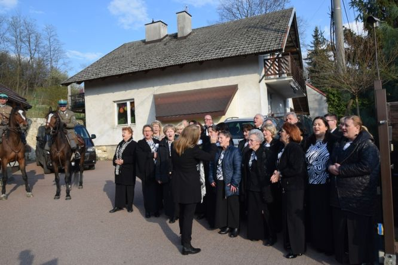 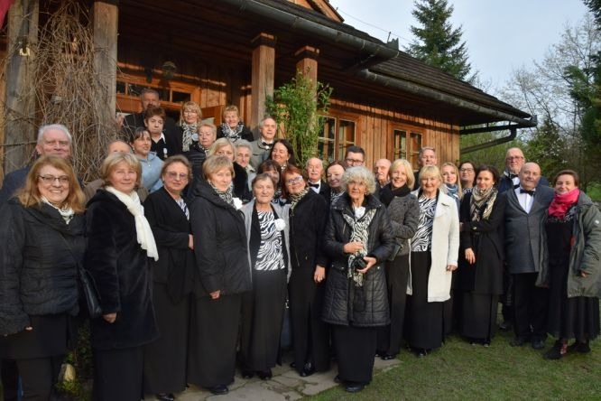
Te słowa z "Testamentu Niezłomnych" wprowadziły w niezwykły nastrój publiczność zebraną na koncertach z okazji 120 rocznicy urodzin Rotmistrza Witolda Pileckiego. Projekt został zrealizowany przy wsparciu finansowym Województwa Małopolskiego w ramach konkursu Mecenat Małopolski.
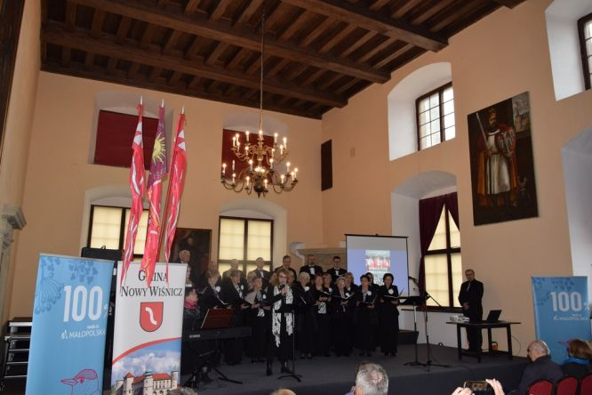 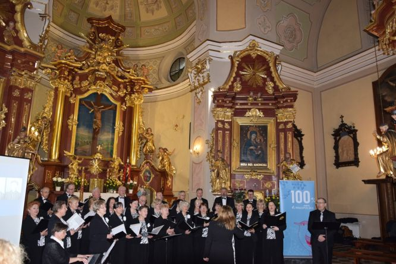
Patronat nad wydarzeniem objął Witold Kozłowski – Marszałek Województwa Małopolskiego.
Nieocenioną pomoc przy realizacji okazały: Urszula Rusecka – Poseł na Sejm RP oraz Krystyna Kolis-Radziszewska.
Swoją obecnością na koncertach zaszczycili: Małgorzata Wassermann – Poseł na Sejm RP (Tyniec), Elżbieta Achinger – Radna Województwa Małopolskiego (Nowy Wiśnicz) oraz przedstawiciele władz samorządowych i kościelnych (Alwernia, Tyniec, Nowy Wiśnicz).
Gościem Honorowym na koncercie w Zamku w Wiśniczu był obchodzący
90 urodziny Pan Andrzej Pilecki – syn Witolda.
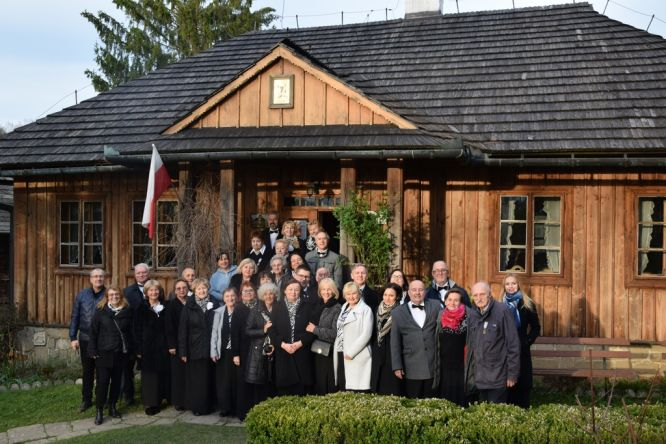 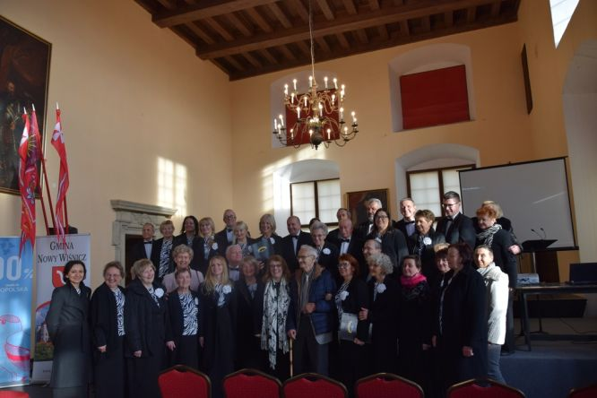
Miejsca koncertów nie były przypadkowe, bowiem wiodły „Szlakiem Ucieczki Rotmistrza Pileckiego z Auschwitz” (Alwernia, Tyniec, Nowy Wiśnicz). Historia utworzenia Szlaku sięga roku 2015, kiedy to trasą ucieczki Rotmistrza Pileckiego odbył się I Rajd Konny, którego organizatorem było Stowarzyszenie Krzewienia Tradycji Kawalerii im. Rotmistrza Witolda Pileckiego w Chrzanowie, powstałe z inicjatywy Ryszarda Sobieraja oraz Stowarzyszenie Auschwitz Memento.
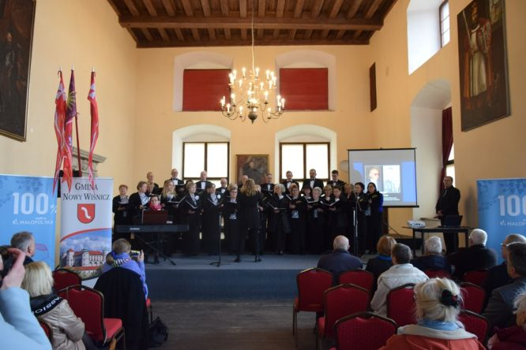 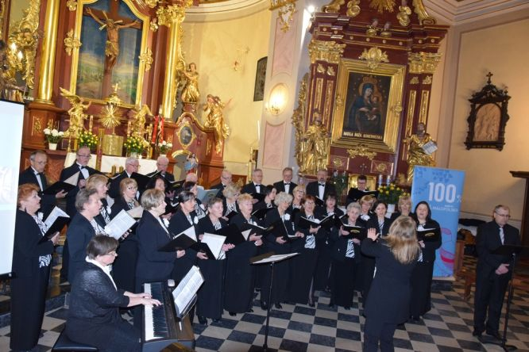 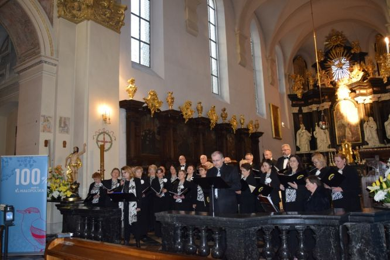
Tak więc wielicki chór Camerata, który obchodzi 25-lecie swojej działalności, działający pod patronatem Wielickiego Centrum Kultury, podążał trasą ucieczki rtm. Witolda Pileckiego z Auschwitz wraz z VII Rajdem Konnym, by tekstem i melodią upamiętnić tego niezwykłego człowieka, rycerza kresowego, obywatela ziemskiego, oficera kawalerii polskiej, dobrowolnego więźnia KL Auschwitz, bohatera podziemia antykomunistycznego, "żołnierza wyklętego", weterana zmagań z totalitaryzmem i komunizmem, człowieka którego życie w całości wypełniła Polska, który tak bardzo ukochał swoją Ojczyznę, że był gotów oddać za nią życie i położyć na szali los swojej rodziny, kochającego męża i ojca, czułego, pełnego humoru, wrażliwego na naturę i sztukę (tworzył wiersze i malował obrazy).
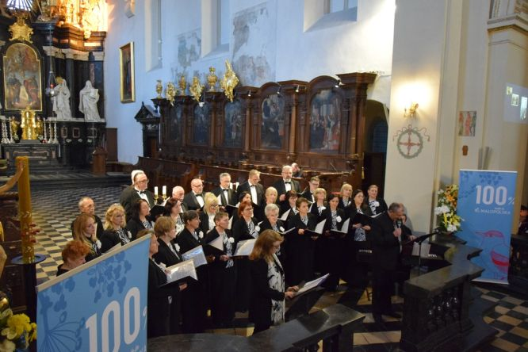
Gdy odszedł z tego świata miał 47 lat. O rotmistrzu mieliśmy nic nie czytać, nic nie słyszeć i nic nie wiedzieć. Jednak Witold Pilecki nie dał o sobie zapomnieć. Powraca ze swoim niesamowitym życiem. Okradziono go za życia ze wszystkiego. Okradziono go i po śmierci. Do dzisiaj spoczywa w nieznanym miejscu, nie ma dla siebie skrawka ziemi, który byłby śladem jego tożsamości.
Czy my, którzy znamy jego czyny mamy milczeć?
Dziełem jego życia były Raporty z Auschwitz, gdzie przebywał 2 lata i 7 miesięcy. Po ucieczce z obozu walczył m.in. w Powstaniu Warszawskim. Aresztowany pod zarzutem organizowania na terenie Polski sieci wywiadowczej, jako płatny rezydent obcego wywiadu, kierowanego przez Sztab II Korpusu Andersa, podczas śledztwa nie zdradził Świętej Rzeczypospolitej. Jak sam mówił: "Ja już żyć nie mogę, mnie wykończono, bo Oświęcim – to była igraszka. Starałem się tak żyć, bym w godzinie śmierci mógł się raczej cieszyć, niż lękać."
Proces Pileckiego rozpoczął się 3 marca 1948 roku, 15 marca został skazany na karę śmierci, zbrodniczy wyrok wykonano w starej kotłowni więzienia Mokotowskiego, 25 maja 1948 roku o godzinie 21.30 strzałem w tył głowy.
1 października 1990 roku unieważniono wyrok w sprawie Witolda Pileckiego oraz pozostałych osądzonych wraz z nim w 1948 roku. Witold Pilecki został pośmiertnie odznaczony Krzyżem Komandorskim Orderu Odrodzenia Polski (1995), Orderem Orła Białego (2006), a także mianowany na stopień pułkownika (2013).
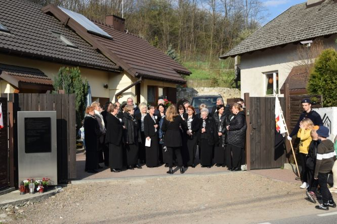 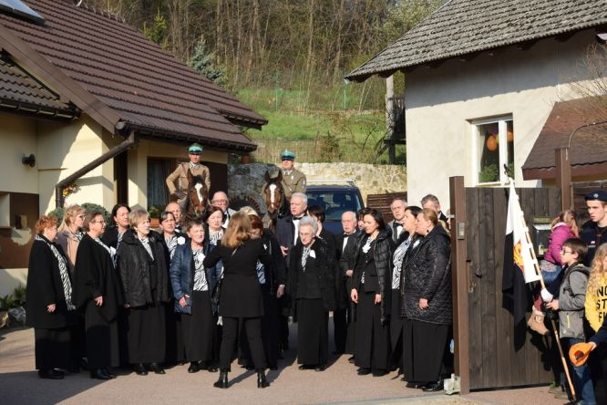
Koncerty, które miały miejsce w Klasztorze OO. Bernardynów w Alwerni (22 kwietnia), Opactwie Benedyktynów w Tyńcu (23 kwietnia) oraz w Zamku w Wiśniczu (24 kwietnia) stanowiły muzyczne opowieści, w których równie ważne były wspomnienia rtm. Pileckiego, relacje jego bliskich, jak i pieśni, będące muzycznym komentarzem do wydarzeń z życia tego wielkiego Polaka. Wraz z chórem Camerata pod dyr. Izabeli Szoty wystąpili Konrad Szota (recytacje) oraz Agnieszka Korczyńska (akompaniament). Autorką scenariusza i prezentacji była Lucyna Grochal.Tekst Izabela Szota.

© Stowarzyszenie Muzyczne Chór Camerata Wieliczka
Prowadzenie strony oraz zdjęcia: Małgorzata Wysocka